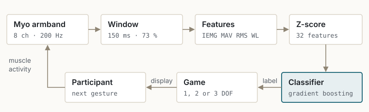
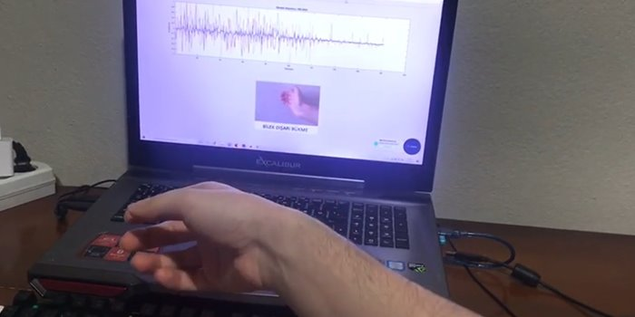
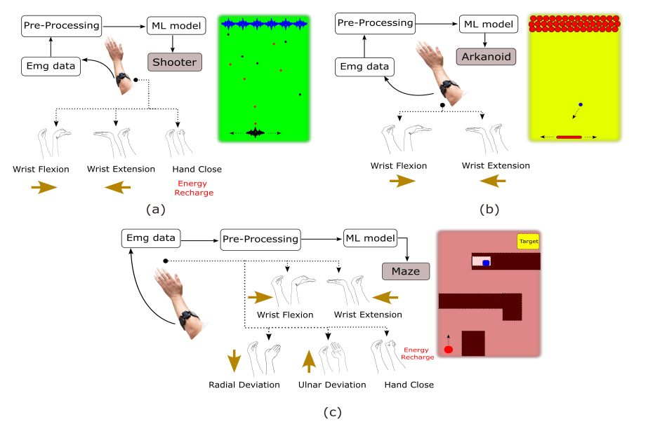

Real-Time sEMG Rehabilitation Interface
Eight-channel hand-state estimation for post-stroke upper-limb training.


Research brief
- Objective
- Estimate intended hand state from forearm sEMG quickly enough that a person can steer an interactive rehabilitation task.
- Approach
- Fixed-length overlapping windows, four time-domain features per channel, normalisation, and a model chosen by cross-validation and deployed online.
- Individual contribution
- Acquisition and feature pipeline, classifier comparison and online deployment, three task interfaces including a custom three-DOF maze, and the evaluation protocol.
- Experimental evidence
- Online control demonstrated at 1, 2 and 3 DOF. Fitts' law regression of completion time on index of difficulty gave R² ≥ 0.98 across ten able-bodied participants and R² ≥ 0.88 for two participants with chronic stroke.
Designing against a time budget
The myoelectric-control literature converges on roughly 300 ms as the outer limit for the delay between intent and response before an interface stops feeling controllable. That figure is a design constraint taken from the literature, not a latency measured in this project.
It still shapes every decision downstream. Window length, overlap, feature count and model complexity all spend from the same budget, so each was chosen with the total in mind rather than optimised on its own.
From skin to decision
Eight channels arrive at a fixed 200 Hz. Each 150 ms window — overlapped by 73 % so decisions arrive faster than the window length alone would allow — is reduced to four time-domain features per channel: integrated EMG, mean absolute value, root mean square and waveform length. They are cheap to compute and describe amplitude and activity without a frequency transform.
Features are Z-score normalised, because raw amplitude shifts with electrode placement, skin condition and session. Five models were then compared under cross-validation on the same features — a support vector machine, a decision tree, XGBoost, CatBoost and gradient boosting — and gradient boosting was deployed for online inference.


Three tasks, increasing in demand
A model that scores well on held-out data has not yet been shown to work as a control interface. The tasks were the test: a brick-breaker for one degree of freedom, a space shooter for two, and a maze for three, so the same pipeline had to hold up as the control problem grew.
The maze was built from scratch. It is the most demanding of the three — continuous navigation rather than discrete reactions — and it is where a pipeline that is merely accurate offline starts to feel laggy or unstable.


Evaluating it as an interface, not a model
Classification accuracy says nothing about whether a person can steer with the signal. The evaluation therefore used Fitts' law, which relates movement time to target distance and width — a standard way of characterising a pointing interface — alongside completion rate, overshoot, path efficiency and goniometric joint-angle measurements.
Regressing completion time on index of difficulty produced strong participant-level model fits: R² ≥ 0.98 for the ten able-bodied participants and R² ≥ 0.88 for the two participants with chronic stroke.
Reading these numbers
R² here describes how well the linear Fitts relationship fits each participant's recorded movement times under this evaluation. It is a measure of regression fit, not of skill, speed or clinical status. With ten and two participants the two values cannot support inference about population-level differences, and a lower R² is not by itself evidence of greater variability. No therapeutic benefit or clinical outcome is claimed anywhere in this work.
Limitations
Not established
- Latency was never measured — the 300 ms figure is a design target from the literature. End-to-end delay from muscle activation to on-screen response was not instrumented.
- Small, uneven groups — ten able-bodied and two post-stroke participants. The evaluation characterises the interface; it does not compare populations.
- No clinical claim — this is an engineering evaluation of a control interface. Rehabilitation efficacy was not assessed here.
- Session dependence — normalisation reduces but does not remove sensitivity to electrode placement and skin condition; cross-session and cross-user generalisation was not characterised.
Output
M. M. Khan, M. Farhan, A. Shahzad, H. S. Qarni, A. Waris and O. Gilani, “MUSED-I: Multi-Gesture Surface Electromyography (sEMG) Dataset for Stroke Rehabilitation”, IEEE DataPort, August 2023. doi:10.21227/04zq-yz45 · record
A laboratory project with a larger team. Colleagues extended the interface set and ran the sessions with clinical participants; recordings were made under NUST Research Ethics Committee approval.